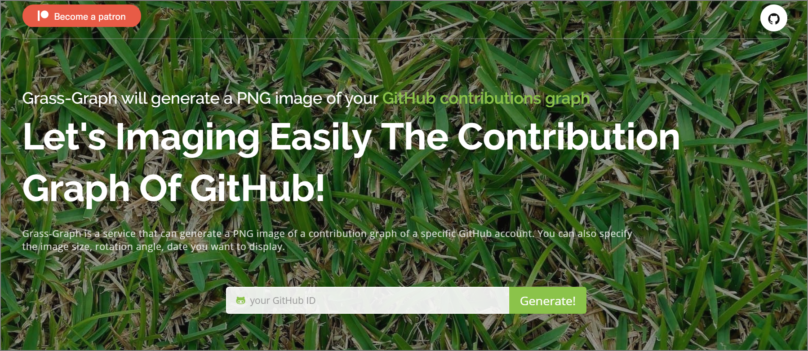
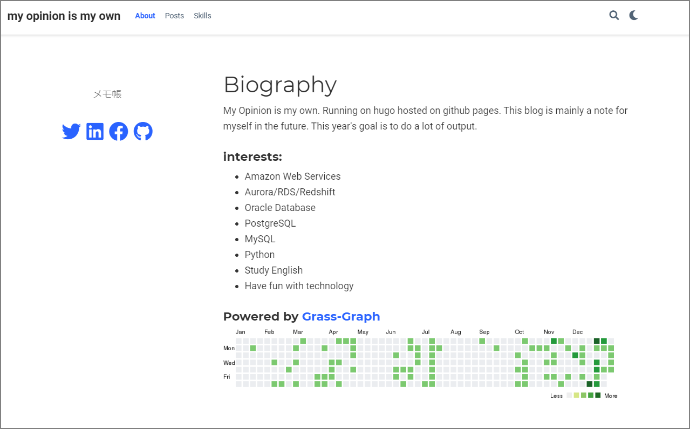

ブログにGithubのcontributions（通称：草）を表示する
トップページにgithubのcontributionsが表示するようにした。github pagesでこのブログを運用しているのでブログを書いた場合に、この草が生えてくるという仕組み。
モチベーションと単純なかっこよさからトップページにgithubのcontributionsが表示するようにした。github pagesでこのブログを運用しているのでブログを書いた場合に、草が生えてくるという仕組み。
こちらのツールを使いました。
GitHub の草状況を PNG 画像で返す heroku app をつくってみた - えいのうにっき https://blog.a-know.me/entry/2016/01/09/222210
1.) アクセス
下記にアクセスする
Grass-Graph / Imaging your GitHub Contributions Graph https://grass-graph.appspot.com/

2.) githubのidを入力する

3.) メタタグが生成されるのでメモする

4.) 画像をクリックした場合にgithubの自分のページに飛ぶようにタグを追加する。
<a href="https://github.com/zatoima" target="_blank">
<img src="https://grass-graph.appspot.com/images/zatoima.png">
</a>
5.) このタグをブログサービスの指定の箇所に貼り付ける。
トップページに貼り付けてみた。
